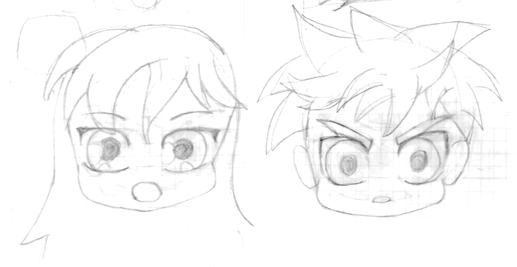
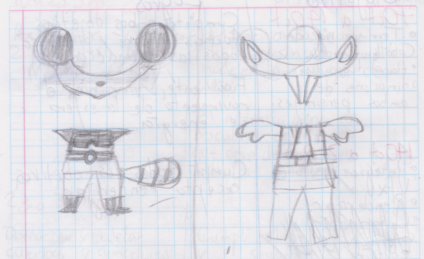
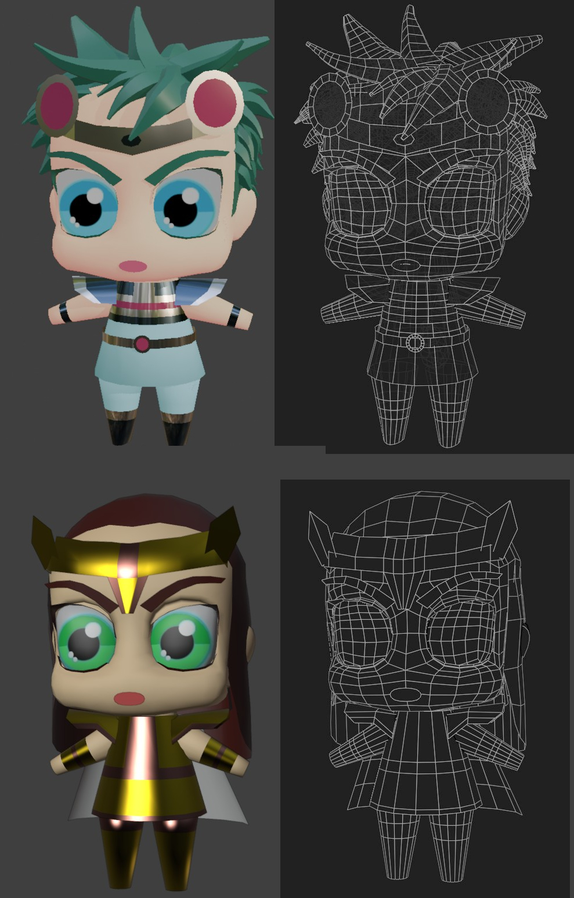
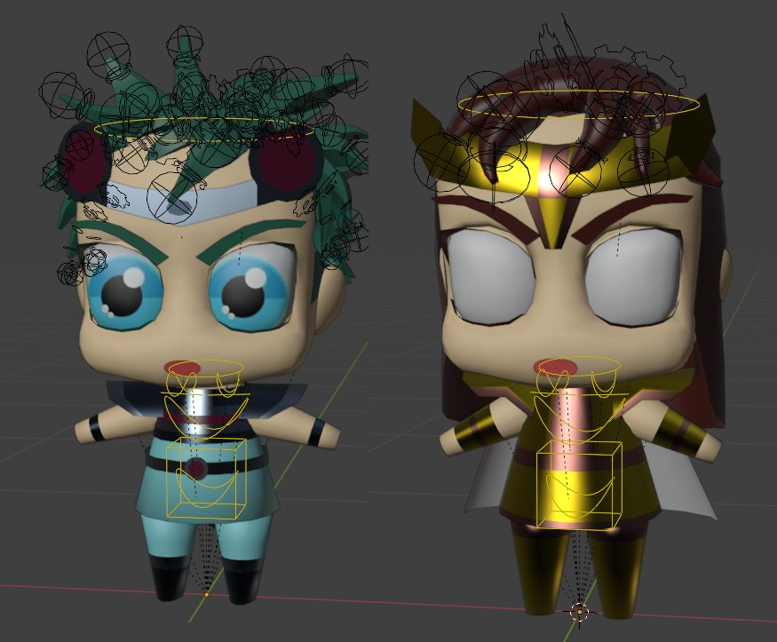
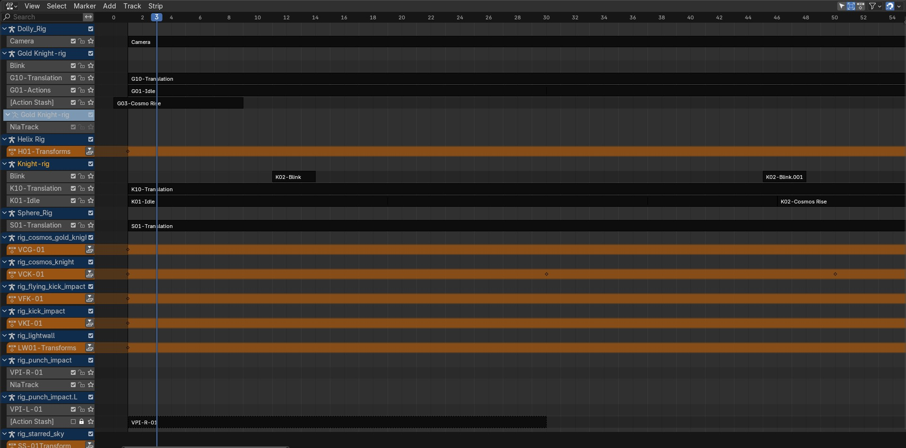
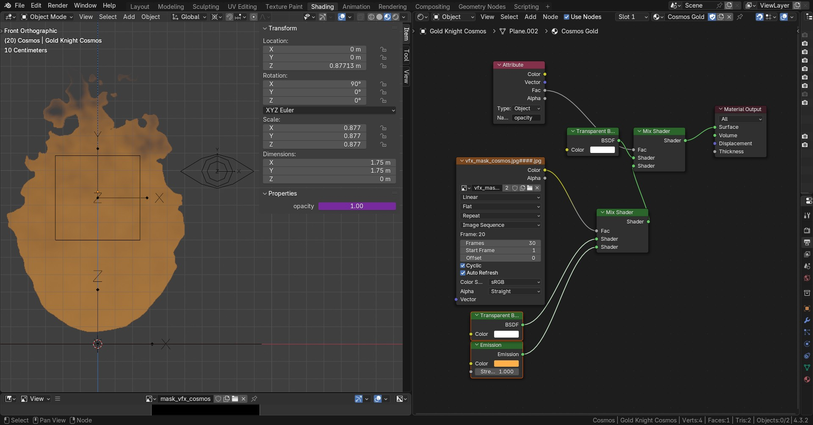
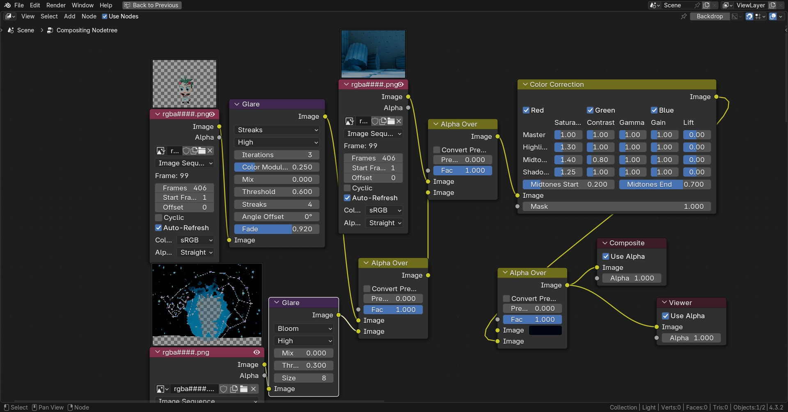
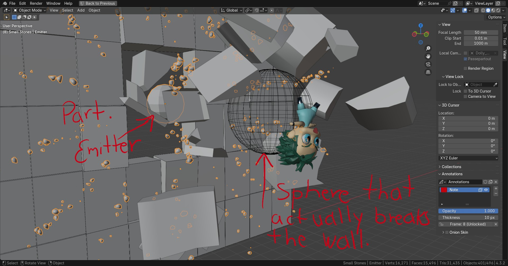
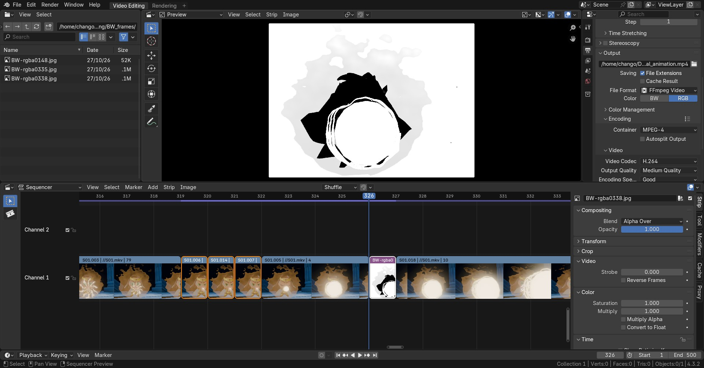

Hi. I wanted to learn from Saint Seiya's beautiful Vfx. After creating a few vfx in Blender, I thought it would be great if some characters could actually use them. And here we are, a month and a half later, finally with the animation:.
After watching a few tutorias about drawing chibi characters, and drawing also a few of them, I came up with these two concept arts:

I also designed their armors, based on a Cacomixtle and a Tlacuache (sorry for the local names). I chose them because those two animals visit our backyard every night, looking for food (since we discoverd them, we try to leave fruit in places where they can find it).

These are the knight's 3D models

I used Rigify for rigging, adding a few extra tentacle samples, in order to control the hair.

For animation, I decided to use the NLA editor. I animated separately every action made by my characters, as if I were making the animations for a video game. I linked those animations into the main blender file layered a "Translate" animation on top, inside the NLA. This way I could pplace every characters and vfx in the correct spot as needed. NLA also made synchronization between characters, camera and vfx a lot easier.

Vfx are separate files also, linked to the main scene. Although their materials are procedural, I baked them as texture sequences, expecting to reduce rendering time (and it did). I rigged Vfx to control not only their transformations, but also their opacity. To do so, I used a custom property in the Vfx's mesh, that I referenced as an Attribute in its Material.

At the same time, that property was controlled by a driver, that referenced a custom property in the " Opacity Bone " in the rig (I learned to do this in Blender Studio's blog, by the way).
For the Vfx animations, I used a great advice that I heard in the VFX Apprentice youtube channel: animate intensity. So, especially for the energy ball, I thought of them as springs, that were being slowly compressed and, then, suddenly realeased.
I rendered in EEVEE with only 5 samples and no shadows, to accelerate the process. I never do much compositing, but I wanted to add some bloom, especially to vfx. So I rendered characters, vfx and stage separately, so that I could control the bloom of character's armors and that of vfx independently, without altering background. I also tweaked colors a little.

For the end of the animation, where one of the knights goes across a wall, I used Rigid Body Physics and particles. Blocks in the middle of the wall are actually made of many smaller parts, each with its own Rigid Body constrain. The character is parented to a Sphere Mesh, that is actually the one that participates in the collision. There is also a particle emitter of smaller rocks, that is synchronized with the animations.

I also spend a little longer editing the video. Watching the anime "Frieren", I noticed that they stopped animation just before something big happens (like shooting a big magic ray, for example). So I repeated a few frames before the energy ball is realeased to imitate the effect, which it improved the sense of power. I also removed some frames for the ball's travel in order to make it look faster. Finally, added a few black and white frames in the most dramatic moments.

And that's it, thanks for reading!